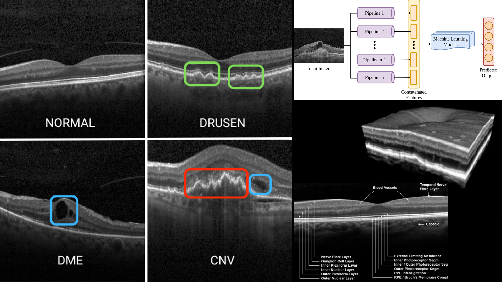

Franka Panda Ball-Balancing via Deep RL – Engineered a shaped reward (exponential centering, velocity/jerk and termination penalties) with aggressive domain randomization (mass, friction, latency, sensor noise), holding 95% success under real-world-calibrated perturbations; deployed on real hardware.
Model-Based RL with PETS – Probabilistic ensemble dynamics with CEM + MPC on a 2D pushing task, reaching 100% success within 100 PETS iterations vs. 62% for a single network trained on 1,000 random episodes.
Dense RGB-D SLAM – Point-to-plane ICP and point-based map fusion on ICL-NUIM.
Monte Carlo Localization – Localized a lost robot in Wean Hall from odometry and laser alone with 20,000 particles, including kidnapped-robot recovery.
Manipulation, Planning & Control
Humanoid Walking with LIPM – Standing, push-recovery and walking controllers for a simulated humanoid with CoM/ZMP-based stabilization.
RRT with Shortcutting on a 7-DoF Franka – Joint-space RRT with OBB collision checking, followed by path shortcutting.
Force vs. Impedance Control – Pressing 15 N against an oscillating whiteboard: force control holds the target, while the impedance controller’s force swings with the board.
Quadrotor Control – Differential-flatness trajectory generation with cascaded PD/LQR and nonlinear adaptive control for spiral and figure-8 tracking.
Sampling-Based Planners in C++ – RRT, RRT-Connect, PRM and RRT* for a high-DoF planar arm, benchmarked for convergence rate and solution quality.
Vehicle Models & Path Tracking – Kinematic and dynamic bicycle, Ackermann, skid-steer and articulated vehicle models with feedback path tracking.
Real-Time Target-Catching Planner – Weighted backward A* in (x, y, t) with a backward-Dijkstra heuristic, replanning in under a second to intercept a moving target.
Generative Models
Denoising Diffusion from Scratch
Implemented the DDPM forward/reverse diffusion process and U-Net from scratch, then retrained at 64×64 on AFHQ cats (40k steps, EMA weights).
LoRA & On-Policy Distillation for Tool Calling
Implemented LoRA from scratch on Qwen2.5-0.5B-Instruct to emit JSON function calls (xLAM data with abstention examples).
Exact match went from 36.1% to 48.5% after one SFT epoch. More SFT plateaued at 48.6%, while on-policy distillation from a larger teacher reached 52.6%.
Also built RoPE and grouped-query attention into a GPT; three KV heads cut attention memory from 3.84 MB to 3.09 MB.
Undergraduate Projects
Greenhouse Harvesting Robot
IIT Bombay e-Yantra Robotics Challenge
Time-efficient fruit-harvesting algorithms with ArUco landmark navigation to plants, 3D fruit localization from camera data, and MoveIt arm planning to pluck fruit into a basket.
Implemented a custom 3D frame-element FEA tool (mesh generator, stiffness assembly) and validated displacements/stresses against Fusion 360 with an interactive post-processor for deformation, stress and factor of safety visualization.
PUMA 560 Replica: Fabrication & Simulation
Designed and 3D-printed a PLA replica of the PUMA 560, validated with hand calculations and COMSOL/Ansys FEA for torque, stress and deflection, plus FK/IK in a Webots factory demo.
Coordination, localization and dynamic trajectory planning for a team of collaborating mobile robots.

Retinal OCT Pathology Classification
Computer Vision course project
Interpretable pipeline of contour, texture, HOG and FFT features with SVM/XGBoost, reaching ~90.9% test accuracy while prioritizing efficiency and explainability.
Chanakya UG Fellowship Grant 2023 · patent in process
YOLOv9 + Tesseract license-plate recognition trained on a custom Indian plate dataset and running on a Raspberry Pi, paired with a through-beam IR CO₂ sensor and cloud logging to flag high emitters.
Completed an intensive hardware fabrication program (PCB milling, laser cutting, CNC milling/lathe) and led development of an autonomous solar-powered seed-sowing robot with soil-quality and crop-monitoring sensors.
Mentored 200+ first-year students in robotics, drone tech, computer vision and CAD/CAM, and helped establish the Tinkerer’s Lab and the Makerspace Lab course.
Domain Lead, Intelligent Vehicles & Robotics, IITI Summer of Code '23 (with MathWorks); a mentored project won the MathWorks Excellence in Innovation award